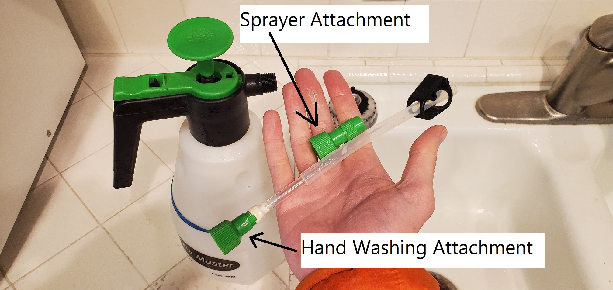

An Improved Car Camping Water Dispenser

| Pump Sprayer from Home Depot |
| Tubing and Tube Clamp from Amazon |
| Thick Straws from Amazon |
| Marine Epoxy from Amazon |
| Pump Sprayer from Home Depot |
| Tubing and Tube Clamp from Amazon |
| Thick Straws from Amazon |
| Marine Epoxy from Amazon |